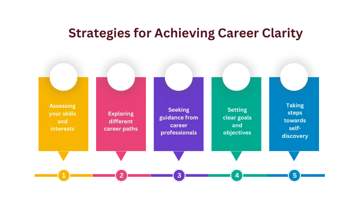
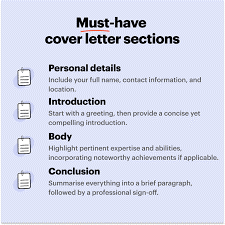
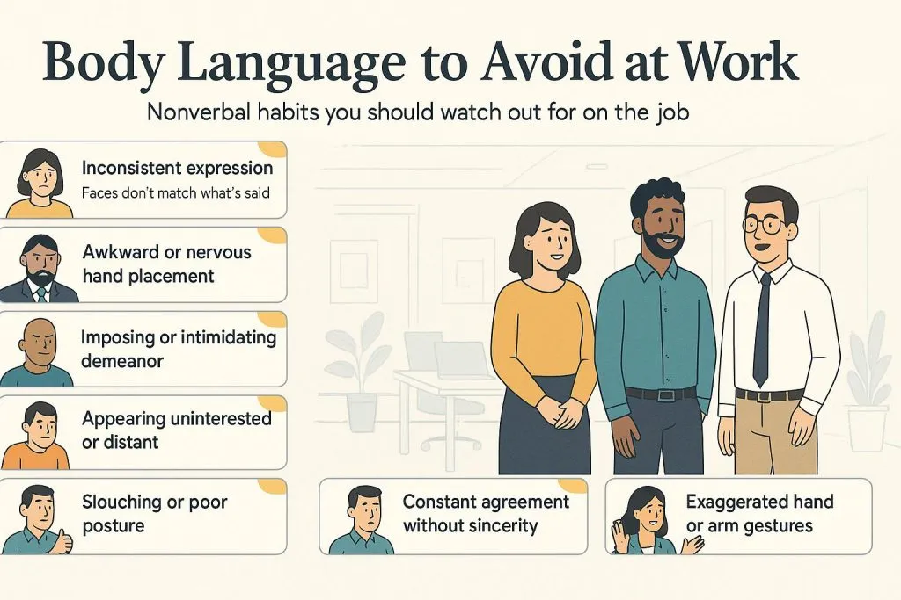
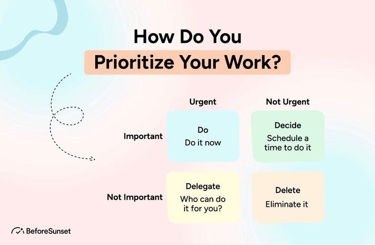
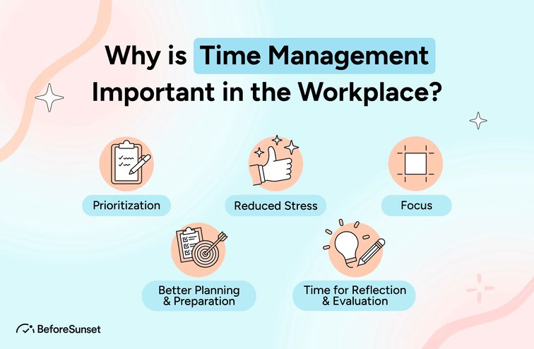
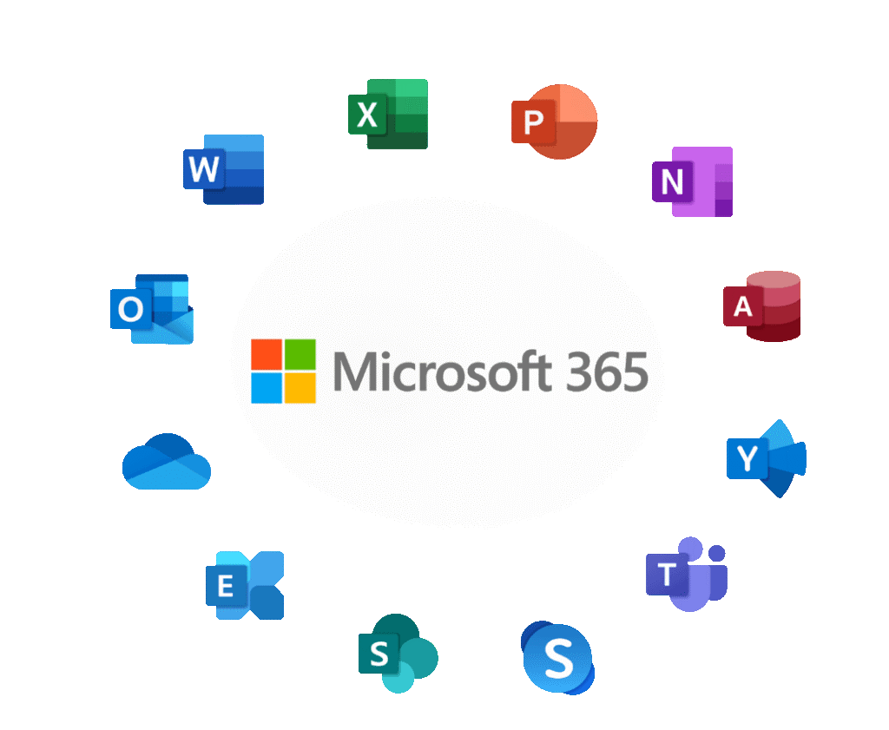
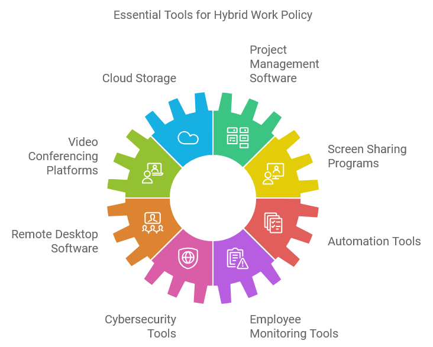
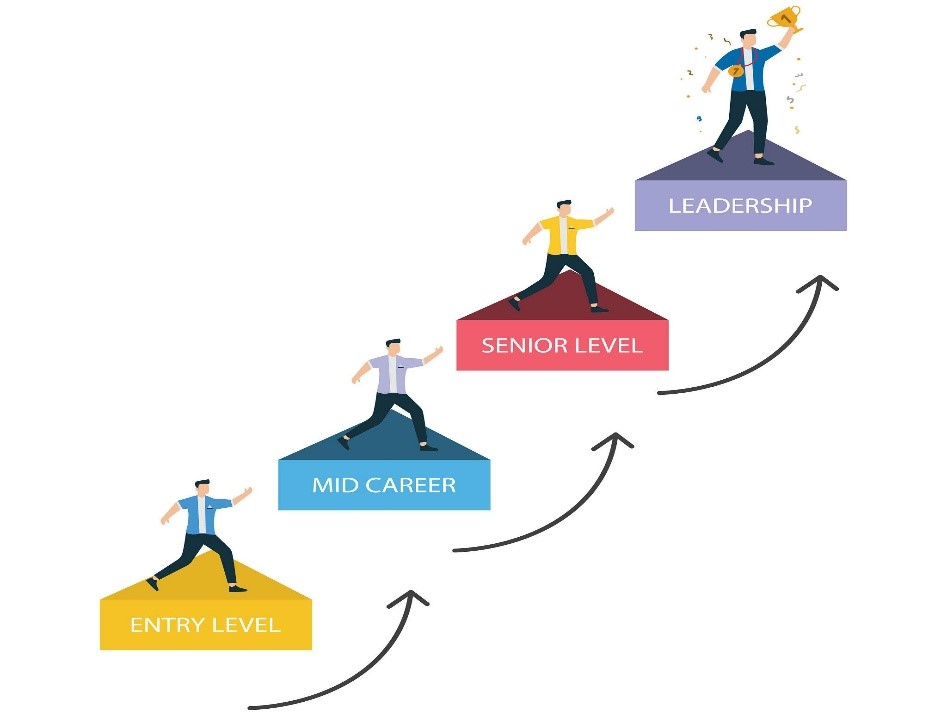
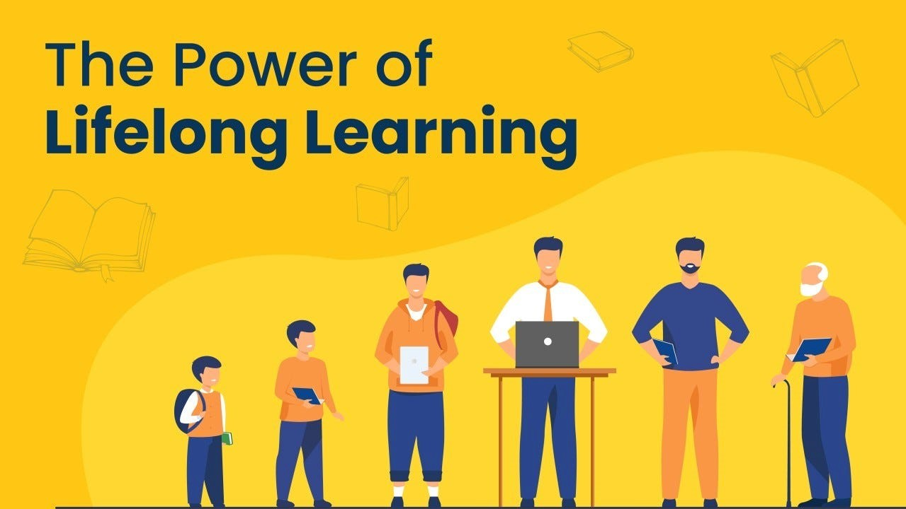

Job Readiness & Graduate Employability Program
*Online course- Self-Led Learning*
Empowering job seekers with practical skills for employment.
Program Overview
This program prepares participants for the workforce by equipping them with essential professional, communication, and job search skills. Designed for youth, newcomers, and job seekers, it provides practical, hands-on training and personalized support.
Who Is It For?
- New graduates
- Newcomers to the workforce
- Individuals changing careers
- Anyone seeking better employment opportunities
Program Structure
Module 1: Personal & Professional Readiness (6 Hours)
- Understand labour market trends and employer expectations
- Identify career goals and pathways
- Assess personal strengths and skills gaps
- Build confidence and a professional mindset
Module 2: Job Search & Application Skills (10 Hours)
- Create a professional résumé tailored to job roles
- Write effective cover letters
- Optimize LinkedIn profiles
- Apply strategic job search techniques
Module 3: Interview Skills & Employment Communication (10 Hours)
- Prepare confidently for interviews
- Answer behavioural interview questions using the STAR method
- Demonstrate professional communication and body language
- Negotiate salary and evaluate job offers
Module 4: Workplace Soft Skills (10 Hours)
- Communicate effectively in the workplace
- Collaborate in diverse teams
- Manage time and priorities
- Apply ethical and professional behaviour
Module 5: Digital & Workplace Technology Skills (8 Hours)
- Use workplace digital tools efficiently
- Write professional emails
- Create professional presentations
- Use AI tools responsibly for productivity
Module 6: Workplace Culture, Rights & Wellbeing (6 Hours)
- Understand organizational culture
- Identify employee rights and responsibilities
- Apply diversity and inclusion principles
- Manage stress and wellbeing
Module 7: Career Development & Future Planning (6 Hours)
- Develop long-term career plans
- Build professional networks
- Identify continuous learning opportunities
- Explore freelancing and entrepreneurship
Module 8: Practical Application & Capstone (4 Hours)
- Participate in mock interviews
- Finalize CV and cover letter
- Analyze real-world case studies
- Develop a personal employment action plan
Module 1: Personal & Professional Readiness
Learning Outcomes:
• Understand the Canadian job market and employer expectations
• Identify personal strengths and skills gaps
• Set clear career goals and pathways
• Build confidence and a professional mindset
Lesson 1
Understanding the Job Market & Employer Expectations
Start Lesson ➔Lesson 2
Knowing Yourself – Skills & Strengths
Start Lesson ➔Lesson 3
Career Goals & Pathways
Start Lesson ➔Lesson 4
Building Confidence & a Professional Mindset
Start Lesson ➔Lesson 1:
Understanding the Job Market & Employer Expectations
The job market refers to available jobs, employer needs, and in-demand skills. In Canada, employers value communication, reliability, teamwork, and willingness to learn.
*For more information about the top-most in-demand jobs in Toronto for 2026 Please click on this link:
https://www.youtube.com/watch?app=desktop&v=7HxU8Sa-9uA&t=26s
Lesson 2:
Knowing Yourself – Skills & Strengths
Self-assessment helps you recognize what you are good at and what you need to improve. Skills include hard skills (technical) and soft skills (personal).
*For more information about Transferable Skills, please click on this link:
https://www.youtube.com/watch?v=QwzGD-g-tvQ
Lesson 3:
Career Goals & Pathways
Career goals help guide your job search. SMART goals are Specific, Measurable, Achievable, Relevant, and Time-based.
*For more information about the SMART goal, please click on this link:
https://www.youtube.com/watch?v=1-SvuFIQjK8&t=47s
Lesson 4:
Building Confidence & a Professional Mindset
Confidence and professionalism help you succeed at work. A growth mindset allows you to learn, accept feedback, and improve continuously.
*For more information, please click on these links:
https://www.youtube.com/watch?v=hiiEeMN7vbQ&t=16s
https://www.youtube.com/watch?v=xuWUj9TtrOc

Module 2: Job Search & Application Skills
Learning Outcomes
• Create a Canadian-style résumé
• Write an effective cover letter
• Use online job search tools in Canada
• Understand the hidden job market and networking
Lesson 1
Writing a Canadian Resume
Start Lesson ➔Lesson 2
Writing a Cover Letter
Start Lesson ➔Lesson 3
Job Search Tools in Canada
Start Lesson ➔Lesson 4
Networking & the Hidden Job Market
Start Lesson ➔Lesson 1:
Writing a Canadian Resume
In Canada, résumés are usually 1–2 pages and focus on skills and achievements. Do not include a photo, age, or marital status.
1- How to Write a Canadian Resume (Step-by-Step)
Please click on this link:
https://www.youtube.com/watch?v=_21TGix4Sxg&t=71s
2- How to Make an ATS-Friendly Resume in MS Word _ ATS Resume Template _ -Free Download:
https://www.youtube.com/watch?v=6HPs3i2Nth0
3- Resume Writing in Canada – With Example
https://www.youtube.com/watch?v=Y9Pyv-GWbmg&t=659s
4- Points to avoid in a Resume for newcomers.
The following video explains what points to avoid in a resume: 12 Resume Mistakes Newcomers Make in Canada (Real Examples)
https://www.youtube.com/watch?v=7EnVcURetyk
Lesson 2:
Writing a Cover Letter
A cover letter explains why you are a good match for the job. It should be customized for each position.
What Is the Function of a Cover Letter?
A cover letter is a short, professional letter sent with your resume. Its main function is to introduce you to the employer and explain why you are a good match for the job.
In the Canadian Job Market
Cover letters are usually 1 page, written in clear, simple English, and customized for each job. Polite, confident, and professional (not emotional)
Main Functions of a Cover Letter
1- Introduces You Personally
2- Explains Your Fit for the Job
3- Clarifies Gaps or Career Changes
4- Show how international experience applies to a Canadian role
This is especially helpful for newcomers and recent graduates.
5- Shows Communication Skills by: Written English skills, and a professional tone.
6- 6-Demonstrates Effort & Professionalism
Submitting a cover letter shows: You took the time to apply seriously, you customized your application, and you respect Canadian workplace culture Many employers see this as a sign of a strong work ethic.
Benefits of a Cover Letter
1- Increases Interview Chances
A strong cover letter can: Make your application stand out and encourage employers to read your resume carefully
2- Helps You Compete Fairly
It helps candidates who have limited Canadian experience and are changing Careers, as well as, are you re-entering the workforce?
3. Allows You to Control Your Story
You choose:
• What the employer notices first
• How your experience is explained
• How your strengths are framed
4. Builds a Professional First Impression
The cover letter is often the first document read. A good first impression can strongly influence hiring decisions.
How to Write a Cover Letter
Please click on these links:
How to write a cover letter
https://www.youtube.com/watch?v=hrZSfMly_Ck
How to write a cover letter that gets you hired! (Best job application cover letter example!)
https://www.youtube.com/watch?v=qEDfNcUmRMA&t=29s

Lesson 3:
Job Search Tools in Canada
Job seekers in Canada use platforms like Job Bank, Indeed, and LinkedIn. Many jobs are found through networking. How to Search for Jobs in Canada? Several important and serious websites offer job opportunities in the Canadian labour market, and most business owners rely on them to find the right employee to fill vacancies.
*For more information about these websites, please click on this link:
https://www.youtube.com/watch?v=RdK6sk2E8NU&t=478s
https://www.youtube.com/watch?v=sXzwKJTrRaY
Lesson 4:
Networking & the Hidden Job Market
Networking means building professional relationships. Many jobs are never advertised online because employers prefer referrals. Building professional relationships increases your visibility, credibility, and access to opportunities you’ll never see online.
How to build a successful professional Network?
1-Be Clear About Your Goal
• Know why you are networking.
• Are you exploring a career field?
• Looking for a job or internship?
• Seeking mentorship or advice?
* Clear goals help you explain who you are and what you’re looking for—without sounding like you’re “just asking for a job.”
2. Focus on Relationships, Not Transactions
• Networking is not about collecting contacts.
It’s about building genuine, long-term relationships.
• Be curious about people
• Listen more than you speak
• Show real interest in their experiences
* People help people they trust and like.
3. Give Before You Ask
• Strong networks are built on mutual value.
• You can offer:
• Help or support
• Useful information or resources
• Encouragement or appreciation
*Even small things matter—like sharing an article or making an introduction.
4. Use Multiple Networking Channels
• Don’t rely on just one method.
• Professional events & workshops
• LinkedIn and online communities
• Alumni networks
• Volunteering
• Informational interviews
* Many jobs are filled because someone says: “I know a person who would be great for this.”
5. Practice Your Introduction (Elevator Pitch)
• Be ready to explain:
• Who you are
• What you do or are learning
• What interests you professionally
*Keep it short and natural—not memorized.
6. Follow Up and Stay Connected
• This is where many people fail.
• Send a thank-you message
• Mention something specific from the conversation
• Check in occasionally (not only when you need help)
*Consistency builds trust.
7. Be Authentic and Professional
• You don’t need to impress—just be yourself, professionally.
• Be honest about your skills and goals
• Be respectful of people’s time
• Keep promises and show reliability
*Your reputation travels through networks.
8. Be Patient and Persistent
• Networking is a long-term investment.
• Results don’t always come immediately
• One conversation can lead to opportunities months later
*Many unadvertised jobs come from timing + trust.
Module 3: Interview Skills & Employment Communication
Learning Outcomes
Prepare confidently for job interviews
Answer behavioural interview questions using the STAR method
Demonstrate professional communication and body language
Understand salary discussions and next steps after interviews
Lesson 1
Types of Job Interviews
Start Lesson ➔Lesson 2
Behavioural Interview Questions (STAR Method)
Start Lesson ➔Lesson 3
Professional Communication & Body Language
Start Lesson ➔Lesson 4
Salary Discussion & Follow-Up
Start Lesson ➔Lesson 1:
Types of Job Interviews
Employers may use phone, video, panel, or in-person interviews. Understanding the format helps you prepare effectively.
To learn more about the characteristics of the different types of job interviews, please watch the following videos:
1-First Job interview video:
https://www.youtube.com/watch?v=GmzYrjAsDng&t=9s
2-Tell me about yourself video:
https://www.youtube.com/watch?v=D_1gOFtB_R0&t=2s
3-For the Online job Interviews, please watch this video:
https://www.youtube.com/watch?v=mDr1j6LnSqo&t=14s
4-TOP 21 QUICK ANSWERS TO JOB INTERVIEW QUESTIONS!
https://www.youtube.com/watch?v=fr-mwiyhZAo&t=15s
Lesson 2:
Behavioural Interview Questions (STAR Method)
Behavioural questions ask about past experiences. The STAR method helps you structure clear answers: Situation, Task, Action, Result.
STAR Method Explained (With Key Highlights):
S – Situation: Briefly describe the context or background
Answer:
• Where did it happen?
• When did it happen?
* Keep it short and relevant. And set the scene clearly (no unnecessary details)
T – Task: Explain your responsibility or role
Answer:
• What were you expected to do?
• What was the goal or challenge?
*Focus on your role, not the team’s role. And clarify expectations and objectives
A – Action: Describe exactly what YOU did
Answer:
• What steps did you take?
• How did you approach the problem?
*Use “I”, not “we.”
*Highlight skills such as: (Communication, Initiative, Leadership, Time management, and Critical thinking). This is the most important part
R – Result: Explain the outcome
Answer:
• What happened because of your actions?
• What did you achieve or learn?
*Use numbers or results if possible (%, time saved, feedback received)
*Mention positive impact
*If the result wasn’t perfect, show learning and improvement.
⭐ Best Practices for Using STAR in Interviews:
• Prepare 5–7 STAR stories before the interview
• Adapt one story to answer multiple questions
• Practice answers to stay within 1–2 minutes
• Be honest and specific
• Stay calm and structured
⭐ Common Skills Assessed Using STAR:
• Teamwork
• Conflict resolution
• Leadership
• Customer service
• Time management
• Adaptability
• Decision-making
• Problem-solving
🚫 Common Mistakes to Avoid
❌ Talking too long about the Situation
❌ Forgetting to explain the Result
❌ Saying “we” instead of “I”
❌ Giving hypothetical examples
❌ Not connecting actions to outcomes
⭐ Bonus Tip for Students & Job Seekers
If you don’t have work experience, use:
• School projects
• Volunteering
• Internships
• Group assignments
• Personal challenges
Lesson 3:
Professional Communication & Body Language
Employers pay attention to eye contact, posture, tone of voice, and active listening.
Why Body Language Matters???
55% of first impressions are influenced by body language
Interviewers assess:
• Confidence
• Professionalism
• Communication skills
• Cultural fit
Your body language can support or weaken your verbal answers
⭐ Before the Interview
• First Impression (First 30 Seconds)
• Walk in confidently
• Stand tall, shoulders relaxed
• Smile naturally
• Offer a firm (not crushing) handshake if appropriate
*Match the interviewer’s energy and professionalism
⭐ During the Interview
1-Posture
• Sit upright, back straight
• Lean slightly forward to show interest
• Keep both feet flat on the floor
• Avoid slouching or leaning back too much
✔ Shows confidence and engagement
2- Eye Contact
• Maintain eye contact 60–70% of the time
• Look at the interviewer while listening and speaking
If multiple interviewers:
• Make eye contact with the person who asked the question
• Briefly include others when answering
❌ Avoid staring or looking down constantly
3- Facial Expressions
Smile when greeting and occasionally during conversation
Keep expressions natural and positive
Nod gently to show understanding
✔ Shows friendliness and approachability
4- Hand Gestures
• Use natural, open gestures
• Keep your hands visible (rest them on the table or lap)
• Use gestures to emphasize key points
❌ Avoid pointing, crossing arms, or hiding hands
5- Hand & Arm Position
Arms relaxed, not crossed
Palms open when speaking
Avoid fidgeting with pens, rings, or clothes
✔ Shows openness and honesty
6-Head Movements
• Light nodding shows active listening
• Avoid excessive head movement
⭐ Voice & Body Coordination
• Speak clearly and at a steady pace
• Pause briefly before answering
• Match confident posture with calm speech
✔ Body language + voice = credibility
🚫 What to Avoid
• Slouching
• Crossing arms or legs tightly
• Excessive movement or fidgeting
• Looking at your phone or watch
• Overly rigid posture
• Touching face, hair, or mouth repeatedly
⭐ Online / Video Interview Body Language Tips
• Sit at eye level with the camera
• Look into the camera when speaking
• Good lighting on your face
• Keep shoulders visible
• Avoid swaying or spinning chair
**Please click on the following link to watch an example of a video job interview:
⭐ Cultural Awareness (Very Important)
• Eye contact expectations vary by culture
• Handshakes may differ or be optional
• Personal space norms vary
• ✔ When unsure, observe and adapt
⭐ Simple Rule to Remember
(Open posture + eye contact + calm movements = confidence)
Lesson 4:
Salary Discussion & Follow-Up
Salary discussions usually happen after an interview. It is acceptable to ask questions and take time to respond.
Exact questions you can ask about salary:
1- When the employer has NOT mentioned salary yet
Use polite, professional wording:
• “Could you share the salary range budgeted for this role?”
• “May I ask if there is an established compensation range for this position?”
• “At what stage do you usually discuss compensation and benefits?”
*This sounds mature and professional, not money-focused.
2- When the employer asks YOU about salary expectations
Never give one number — use a range:
• “Based on my research and experience, I’m looking for a range of $___ to $___, but I’m open depending on the full compensation package.”
• “I’m flexible and would like to understand the responsibilities and growth opportunities before finalizing a number.”
3- Questions about the FULL compensation (very smart to ask)
These show you think long-term:
• “Could you tell me what benefits are included in the compensation package?”
• “Is there a bonus structure or performance-based increase?”
• “How often are salaries reviewed?
🚫 QUESTIONS YOU SHOULD NOT ASK
Avoid these — they hurt your image:
❌ “How much will you pay me?”
❌ “Is the salary negotiable?” (too direct)
❌ “I really need at least $___”
❌ Asking salary in the first 5 minutes
*IF YOU DIDN’T ASK IN THE INTERVIEW
You can ask later (very normal):
Email example:
“Thank you again for the interview. I’m very interested in the role and wanted to ask if you could share the salary range and benefits for the position.”
Module 4: Workplace Soft Skills
Learning Outcomes
• Communicate clearly and professionally at work
• Work effectively in a team
• Manage time and workplace priorities
• Solve problems and handle conflict professionally
Lesson 1
Workplace Communication
Start Lesson ➔Lesson 2
Teamwork & Collaboration
Start Lesson ➔Lesson 3
Time Management & Organization
Start Lesson ➔Lesson 4
Problem Solving & Conflict Management
Start Lesson ➔Lesson 1:
Workplace Communication
Effective workplace communication includes listening, speaking clearly, and using respectful language with colleagues and supervisors.
Key Highlight Points of the Effective Communication Skills at Work:
1️-Clear & Concise Communication
• Express ideas and directly
• Avoid jargon and unnecessary details
• Focus on the main message and desired outcome
2️-Active Listening
• Give full attention (no interrupting or multitasking)
• Ask clarifying questions
• Paraphrase to confirm understanding
3️-Professional Verbal Communication
• Use respectful, positive language
• Adjust tone based on audience (manager, colleague, client)
• Speak confidently, not aggressively
4️-Non-Verbal Communication Awareness
• Maintain appropriate eye contact
• Use open body language
• Be aware that facial expressions and posture send messages
5️-Written Communication Skills
• Write clear, well-structured emails and messages
• Use professional formatting and correct grammar
• Keep emails brief and action-oriented
6️-Emotional Intelligence in Communication
• Manage emotions, especially in stressful situations
• Show empathy and respect for others’ perspectives
• Respond thoughtfully, not reactively
7️-Giving & Receiving Feedback
• Give feedback that is specific, constructive, and respectful
• Be open to feedback without becoming defensive
• Focus on improvement, not blame
8️-Communication in Teamwork
• Share information openly
• Respect different communication styles
• Encourage participation and collaboration
9️-Conflict Communication Skills
• Address issues early and calmly
• Focus on the problem, not the person
• Seek solutions that benefit everyone
10-Adaptability & Cultural Awareness
Adjust communication for diverse cultures and backgrounds
Be mindful of language barriers
*Please click on this link to watch a video explaining all the points mentioned above:
https://www.youtube.com/watch?v=QGHBq5OEsBM
Please see the image below to learn about body language to avoid at work.

Lesson 2:
Teamwork & Collaboration
Most workplaces require teamwork. Being respectful, flexible, and cooperative helps teams succeed.
Key Points of Teamwork & Collaboration:
1- Clear communication: Share information openly and listen to others
2- Shared goals: Everyone understands and works toward the same objective
3- Respect & trust: Value different opinions, skills, and backgrounds
4- Accountability: Take responsibility for your role and deliver on time
5- Cooperation: Support teammates and help when needed
These five points cover 90% of what employers expect when they say “team player.”
Lesson 3:
Time Management & Organization
Time management means planning tasks, meeting deadlines, and balancing multiple responsibilities at work.

Key Points: Time Management & Organization
1- Prioritization: Focus on the most important tasks first
2- Planning: Organize tasks and set realistic schedules
3- Meeting deadlines: Complete work on time and reliably
4- Organization: Keep workspaces, files, and tasks well-ordered
5- Focus & efficiency: Minimize distractions and use time wisely.

Lesson 4:
Problem Solving & Conflict Management
Problems and conflicts happen in every workplace. Handling them calmly and professionally is an important soft skill.
Key Principles of Conflict Management:
1- Act Early: Address issues immediately to prevent escalation.
2- Neutral Setting: Meet in a private, neutral location.
3- Stay Calm: Keep emotions in check and avoid personal attacks.
4- Focus on the Problem: Distinguish between personal disputes and professional issues.
Steps for Effective Resolution
1- Identify the Issue: Clearly define the source of the conflict and the parties involved.
2- Open Dialogue: Facilitate a conversation where each person expresses their perspective without interruption.
3- Active Listening: Listen to understand the underlying needs and interests, not just to react.
4- Find Common Ground: Identify areas of agreement and shared goals.
5- Brainstorm Solutions: Collaborate on potential solutions that address the root cause.
6- Implement & Follow Up: Agree on a plan, define responsibilities, and monitor the situation to ensure the resolution works.
For more information, please click on these links:
https://www.youtube.com/watch?v=D--X9-726bk
https://www.youtube.com/watch?v=AnIk41p9QnA
Module 5: Digital & Workplace Technology Skills
Learning Outcomes
• Use basic digital tools confidently in the workplace
• Write clear and professional emails
• Create simple professional documents and presentations
• Use common remote work and AI tools responsibly
Lesson 1
Essential Computer & Digital Skills
Start Lesson ➔Lesson 2
Professional Email Communication
Start Lesson ➔Lesson 3
Workplace Software & Presentations
Start Lesson ➔Lesson 4
Remote Work Tools & AI Basics
Start Lesson ➔Lesson 1:
Essential Computer & Digital Skills
Most jobs in Canada require basic computer skills. This includes using a keyboard and mouse, creating folders, saving files, and using common software programs. (Computer Hardware basic course, Operating system course, and MS Office 365 version. In addition to many service programs (Zoom, Microsoft Teams, file compression, and antivirus software)
Basic File Organization: The Best Way to Manage Files and Folders (ABC Method):
https://www.youtube.com/watch?v=uSnpAnhV2Jo
https://www.youtube.com/watch?v=gI0eR61cKug
Lesson 2:
Professional Email Communication
Email is a primary communication tool in Canadian workplaces. Professional emails are clear, polite, and well-structured.
Professional Email Structure:
• Subject: Job Application
• Administrative Assistant Greeting: Dear Hiring Manager,
• Body: I am writing to apply for the position...
• Closing: Kind regards,
• Signature: Your Name
Lesson 3:
Workplace Software & Presentations
Common workplace software includes Microsoft Word, Excel, PowerPoint, and Google Docs. You do not need advanced skills to start.
You need.
Watch the video below to learn essential computer skills everyone should know. - Basic computer skills for all users
https://www.youtube.com/watch?v=rXNy8M3uq8I

Lesson 4:
Remote Work Tools & AI Basics
Many workplaces use remote tools such as Zoom or Microsoft Teams. AI tools can help with writing, organization, and learning, but should be used ethically.
Responsible AI Use
• Use AI to draft ideas
• Always review and edit.
• Do not submit AI work without understanding it
• What you need for a hybrid work policy.

Module 6: Workplace Culture, Rights & Wellbeing
Learning Outcomes
• Understand Canadian and Ontario workplace culture.
• Know your basic rights and responsibilities at work.
• Recognize respectful and inclusive workplace behavior.
• Apply strategies to manage stress and well-being at work.
Lesson 1
Workplace Culture in Canada
Start Lesson ➔Lesson 2
Employee Rights & Responsibilities (Ontario)
Start Lesson ➔Lesson 3
Diversity, Equity & Inclusion
Start Lesson ➔Lesson 4
Workplace Wellbeing & Stress Management
Start Lesson ➔Lesson 1:
Workplace Culture in Canada
Workplace culture refers to the shared values, behaviors, and expectations in a work environment.
In Ontario and across Canada, employers value professionalism, punctuality, respect, teamwork, and clear communication.
Understanding workplace culture helps employees fit in, build positive relationships, and succeed in their roles.
Key expectations include:
• Arriving on time and being reliable.
• Communicating politely and clearly.
• Respecting diversity and different opinions.
• Following workplace rules and policies
*Must Watch! Canadian workplace culture and interview tips 🇨🇦
https://www.youtube.com/watch?v=bNpqHsFE2X0
https://www.youtube.com/watch?v=EsVV80y2fHg
Lesson 2:
Employee Rights & Responsibilities (Ontario)
Employment standards and human rights laws protect employees in Ontario. These laws ensure fair treatment at work and set minimum standards that employers must follow.
Employees also have responsibilities to perform their duties professionally and safely.
Employee rights include:
• Fair wages and regular pay
• Safe and healthy work environments
• Protection from discrimination and harassment
Employee responsibilities include:
• Completing job duties to the best of your ability.
• Following workplace health and safety rules.
• Treating coworkers and supervisors with respect
Lesson 3:
Diversity, Equity & Inclusion
Ontario workplaces are diverse, meaning employees come from many backgrounds, cultures, and identities.
Diversity recognizes differences, equity ensures fairness and access to opportunities, and inclusion means everyone feels valued and respected.
Inclusive workplace behaviours include:
• Listening respectfully to others.
• Being open to different perspectives.
• Avoiding discrimination, harassment, or offensive language.
Lesson 4:
Workplace Wellbeing & Stress Management
Workplace wellbeing focuses on maintaining mental, emotional, and physical health at work. Stress is common but can be managed through healthy strategies and communication.
Stress management techniques include:
• Taking short breaks when needed.
• Asking questions if tasks are unclear.
• Speaking with a supervisor about concerns.
• Practicing healthy routines such as sleep and exercise.
*Must watch! Inclusive workplace behaviours, Workplace well-being and Stress management:
Inclusive workplace behaviours:
https://www.youtube.com/watch?v=_ZkxjAGlP9Q
Workplace well-being and Stress management:
https://www.youtube.com/watch?v=4TWldzk6E-g
Module 7: Career Development & Future Planning
Learning Outcomes:
• Understand career development and career growth in Canada.
• Create clear short-term and long-term career goals.
• Learn how to build professional networks in Canada.
• Identify learning, training, and upskilling opportunities.
Lesson 1
Understanding Career Development
Start Lesson ➔Lesson 2
Short-Term & Long-Term Career Planning
Start Lesson ➔Lesson 3
Networking & Building Professional Relationships
Start Lesson ➔Lesson 4
Lifelong Learning & Upskilling
Start Lesson ➔Lesson 1:
Understanding Career Development
Career development is the ongoing process of learning, gaining experience, and making choices that help you grow professionally over time.
In Canada, career paths are often flexible. Many people change jobs, industries, or roles as they gain new skills or discover new interests.
Career growth often follows stages such as:
• Entry-level positions where you build basic skills.
• Experienced roles with more responsibility.
• Senior or leadership roles, or specialized positions.

Lesson 2:
Short-Term & Long-Term Career Planning
Career planning helps you set clear goals and take practical steps toward achieving them. Short-term goals usually focus on what you want to achieve in the next 6–12 months, such as finding a job or gaining Canadian work experience.
Long-term goals focus on where you want to be in 3–5 years, such as moving into a senior role, changing careers, or gaining specialization.
Having both short-term and long-term goals helps you stay motivated and focused.
To know more about long-term and Short-Term Goals, please watch this video:
https://www.youtube.com/watch?v=TAWWlUDdTp4
Lesson 3:
Networking & Building Professional Relationships
Networking means building and maintaining professional relationships with people in your field. In Canada, many job opportunities are found through connections rather than online job postings.
Effective networking methods include:
• Using LinkedIn to connect with professionals.
• Attending community or industry events.
• Volunteering to gain experience and contacts.
• Conducting informational interviews to learn about careers
Strong professional relationships can lead to job referrals, mentorship, and career advice.
Lesson 4:
Lifelong Learning & Upskilling
Lifelong learning means continually learning and improving your skills throughout your career. Upskilling helps you stay competitive in the job market and adapt to industry changes.

Module 8: Practical Application & Capstone
Learning Outcomes:
• Apply job readiness skills in real-world job search situations.
• Prepare for interviews using practical techniques.
• Finalize a professional résumé and cover letter.
• Create a clear personal employment action plan.
Lesson 1
Applying Skills in Real-Life Situations
Start Lesson ➔Lesson 2
Mock Interview & Self-Reflection
Start Lesson ➔Lesson 3
Finalizing Résumé & Cover Letter
Start Lesson ➔Lesson 4
Creating Your Employment Action Plan
Start Lesson ➔Conclusion
Program Completion
Finish ➔Lesson 1:
Applying Skills in Real-Life Situations
This lesson focuses on putting your learning into action. Job readiness skills are most effective when they are applied in real situations such as job applications, interviews, and workplace communication.
Real-life applications include:
• Applying for jobs online or in person.
• Preparing answers for interviews.
• Communicating professionally with employers.
• Following up after interviews or applications.
Practicing these skills helps build confidence and improves your chances of success.
Watch this video to learn more about life skills everyone should know:
https://www.youtube.com/watch?v=sids6PjkC1I
Lesson 2:
Mock Interview & Self-Reflection
• Mock interviews are practice interviews that help you prepare for real ones. They allow you to practice answering questions clearly and confidently.
You can practice:
• Alone, by speaking answers out loud.
• With a friend or mentor.
• By recording yourself and reviewing your responses.
Using the STAR method helps structure your answers. Self-reflection after practice helps you identify strengths and areas for improvement.
Watch this video to learn what self-Reflection is.
https://www.youtube.com/watch?v=ABDpAhYektI
Lesson 3:
Finalizing Résumé & Cover Letter
Before applying for jobs, it is important to review and finalize your résumé and cover letter. These documents should be clear, accurate, and customized for each job.
Final checks include:
• Correct contact information.
• Clear job titles, dates, and responsibilities.
• No spelling or grammar errors.
• Content tailored to the job posting.
Well-prepared documents create a strong first impression with employers.
Lesson 4:
Creating Your Employment Action Plan
An employment action plan helps you stay organized and focused after completing the program. It outlines your goals, the steps you will take, and timelines to keep you accountable.
Action plan goals include:
• Applying to a certain number of jobs each week.
• Improving skills through courses or training.
• Expanding your professional network.
A clear action plan increases motivation and helps turn goals into results.
Conclusion:
You have completed the Pathway to Employment – Job Readiness & Graduate Employability Program.
You are now ready to:
- Apply your job readiness skills
- Continue learning and improving
- Move forward confidently in your career journey
The end
A.S